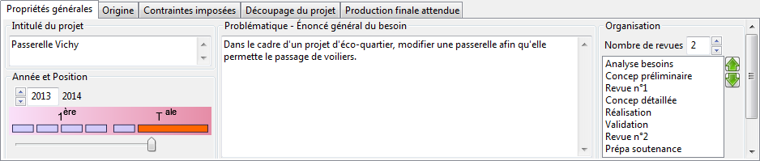
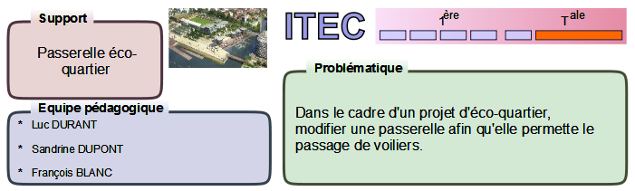
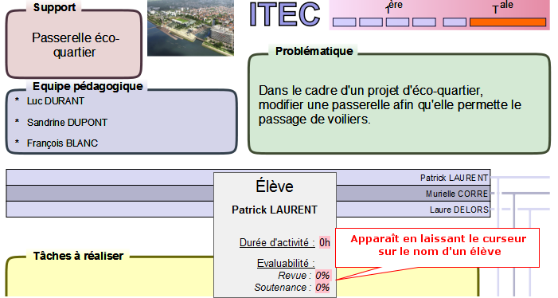

Élaboration d'une
fiche de validation de projet
Élaboration d'une
fiche de validation de projet
1 - Configurer la classe
Il est impératif de configurer la classe avant de
définir les autres paramètres de la séquence.
voir : Configurer la
classe
2 - Définir les propriétés du projet
depuis l'arbre : cliquer sur "Projet".

__dans_Propriété_ saisir :
- l'intitulé du projet
- l'année scolaire et la position dans le
cycle (1ère ou Terminale)
- la problématique
- le nombre de revues et leurs positions
dans le déroulement du projet

depuis les autres onglets, préciser :
- l'origine : partenariat, thématique, concours, ...
- les contraintes imposées :
- coût maximal,
- nature d’une ou des solutions techniques ou de familles de
matériels, de constituants ou de composants
- environnement.
- le découpage du projet :
- intitulés des différents parties
- énoncé du besoin pour chaque partie
- la production finale attendue
- documents de formalisation des solutions proposées
- sous-ensemble fonctionnel d’un prototype, éléments d’une maquette
réelle ou virtuelle
- supports de communication.
Ces derniers renseignements figureront sur le dossier de validation.
3 - Définir le support d'étude
depuis l'arbre :, cliquer sur "support".

__dans_Propriétés:_
- préciser le nom du support
- créer un lien vers un dossier ou un fichier donnant des précisions sur
le support
- changer l'image du support
- rajouter une description, si besoin

résultat sur la fiche

4 - Définir l'équipe pédagogique
| depuis l'arbre : |
depuis le menu : |
- clic-droit sur "Equipe pédagogique",
- puis cliquer sur "Ajouter un professeur"

|
 |
dansPropriétés, saisir les paramètres propres au professeur.
- identité
- discipline
- avatar
et préciser s'il s'agit du professeur référent pour le projet.

Recommencer autant de fois que nécessaire...
résultat sur la fiche 
5 - Définir le groupe d'élèves
| depuis l'arbre : |
depuis le menu : |
- clic-droit sur "Elèves",
- puis cliquer sur "Ajouter un élève"

|
 |
dansPropriétés, saisir les paramètres propres à l'élève :
- le nom et le prénom de l'élève,
- avatar
Il est également possible de désigner le fichier "Grille d'évaluation",
mais cette opération est normalement réalisée automatiquement lors de la
génération de la d'évaluation.

Recommencer autant de fois que nécessaire.
résultat sur la fiche

6 - Définir les tâches
Les premiers éléments du projet
étant définis, il reste à décrire les différentes tâches,
à les attribuer à un ou des élèves
et y associer des compétences.
voir : Définir
les tâches du projet